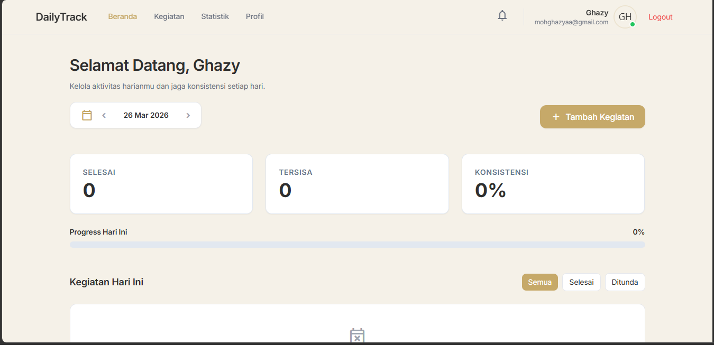

Community Project
Community Project
Blog Frecationer
Website blog komunitas di mana saya berperan dalam pengembangan frontend. Fokus utama pada layout responsif, komponen reusable, serta struktur UI yang scalable untuk website berbasis konten.
 Personal Project
Personal Project
SpendGuard
Aplikasi manajemen keuangan pribadi yang berawal dari kebutuhan saya sendiri untuk memahami pola pemasukan dan pengeluaran, lalu dikembangkan menjadi dashboard finansial yang terstruktur.

Personal ProjectDailyTrack
Aplikasi manajemen aktivitas harian yang saya kembangkan untuk membantu mengatur produktivitas, melacak kebiasaan, dan memonitor progres harian secara terstruktur melalui dashboard yang simpel dan intuitif.
Proyek lain akan terus ditambahkan seiring waktu.